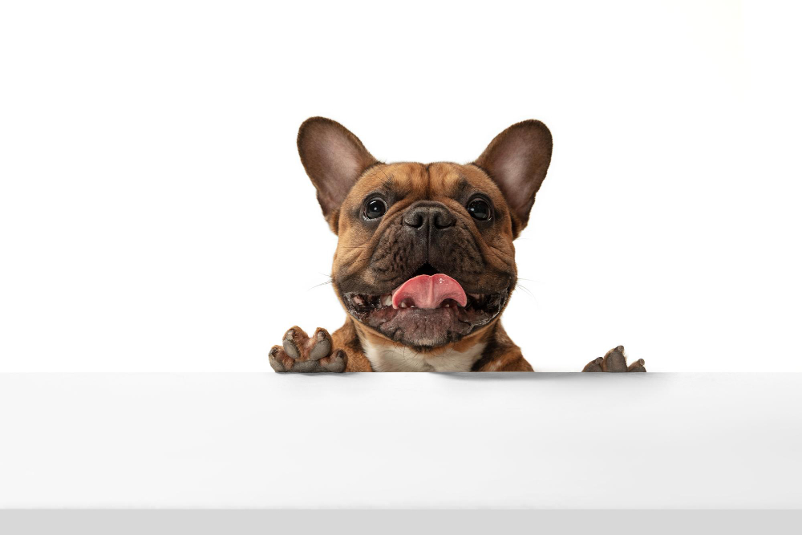
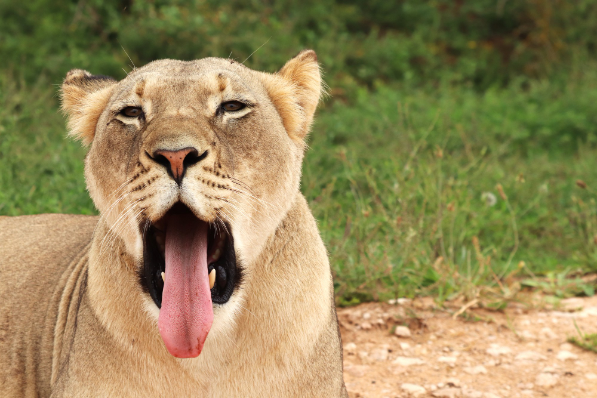
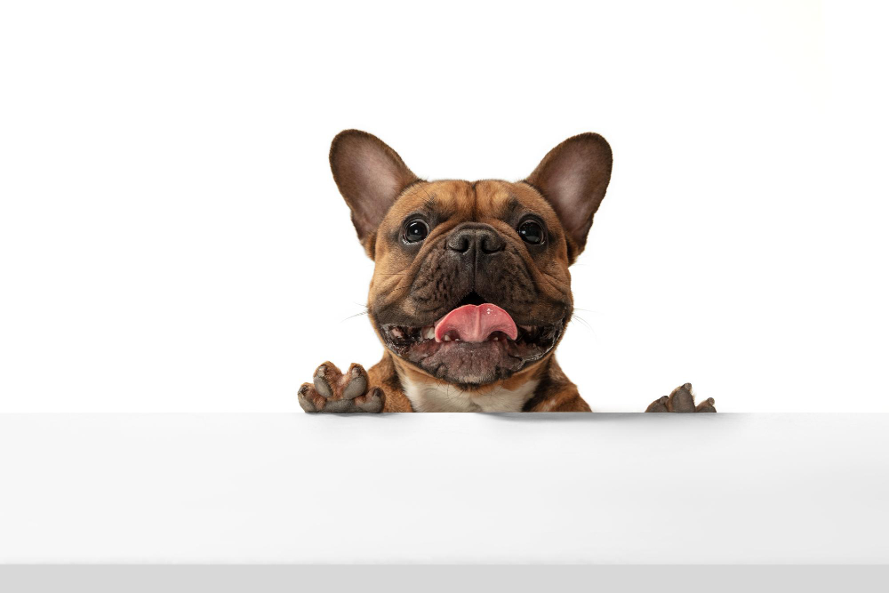
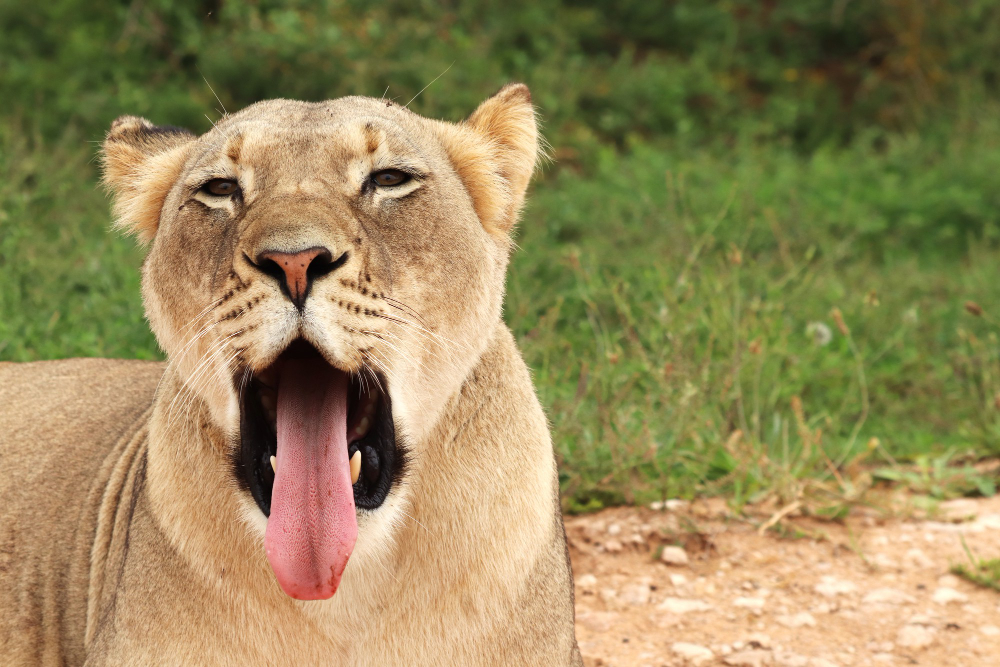

Concepto 1
Breakpoints
Debemos lembrar que o concepto de deseño responsivo, ademais de adaptación ao tamaño implica o cambio no deseño atendendo ao tamaño ou outras características do dispostivo. A anchura da pantalla na que se produce o cambio é o que se coñece como Breakpoint.